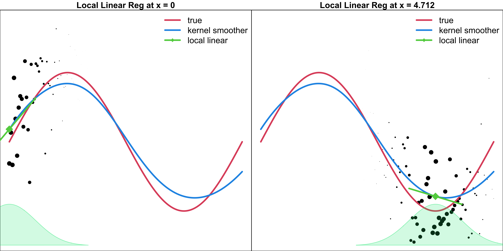
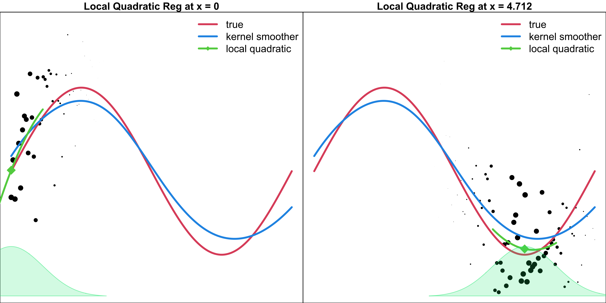
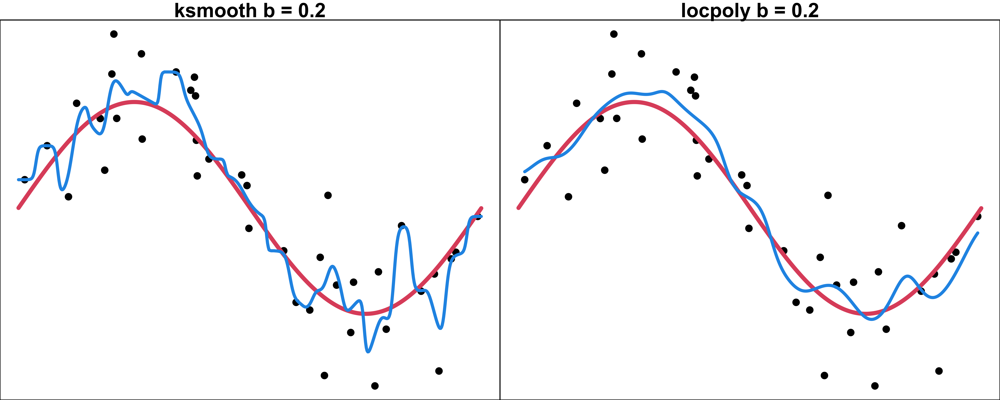

Nonparametric Regression 🛠
MATH 4780/MSSC 5780 Regression Analysis
Nonparametric Regression
Nonparametric Kernel Smoother
Local Regression
Nonparametric Statistics
- A general regression model \(y = f(x) + \epsilon\).
- Parametric model: make an assumption about the shape of \(f\), e.g., \(f(x) = \beta_0 + \beta_1 x\), then learn the parameters \(\beta_0\) and \(\beta_1\).
. . .
Nonparametric methods do not specify a fixed, finite-dimensional functional form for (f). Instead, they allow the data to determine its shape, subject to assumptions or constraints such as smoothness.
-
Nonparametric methods do NOT specify a fixed, finite-dimensional functional form for \(f\).
- Seek an estimate of \(f\) that gets close to the data points without being too rough or wiggly.
- Avoid the possibility that the functional form used to estimate \(f\) is very different from the true \(f\).
- Do not reduce the problem of estimating \(f\) to a small number of parameters, so more data are required to obtain an accurate estimate of \(f\). 1
- So far, with a general regression model \(y = f(x) + \epsilon\), we make an assumption about the form or shape of \(f\), for example, \(f(x) = \beta_0 + \beta_1 x\), then learn the parameters \(\beta_0\) and \(\beta_1\) to understand the relationship between \(y\) and \(x\). This is a parametric model.
-
Nonparametric methods do not make assumptions about the form of \(f\).
- They seek an estimate of \(f\) that gets close to the data points without being too rough or wiggly.
- The methods avoid the possibility that the functional form used to estimate \(f\) is very different from the true \(f\).
- Since they do not reduce the problem of estimating \(f\) to a small number of parameters, more observations are required to obtain an accurate estimate for \(f\).
Parametric vs. Nonparametric Models
Parametric (Linear regression)
Nonparametric (Kernel smoother)

Nonparametric Regression
- In (parametric) linear regression, \(\small \hat{y}_i(x_i) = \sum_{j=1}^n h_{ij}y_j\).
- Many nonparametric regression methods estimate the regression function using a weighted linear combination of observed responses: \[\small \hat{y}_i = \sum_{j=1}^n w_{ij}y_j\] where \(\sum_{j=1}^nw_{ij} = 1\) or
\[ \hat f(x_i)=\sum_{j=1}^n w_j(x_i)y_j\]
Generally, \(w_{ij}\) is larger when \(x_i\) and \(x_j\) are closer. \(y_i\) is affected more by its neighbors.
\[\small {\bf \hat{y} = Xb = X(X'X)^{-1}X'y = Hy},\] - \(w_{ij}\): measures the contribution of the observed response \(y_j\) to the fitted value \(\hat{y}_i\). - In linear regression, observations contribute to a global fitted model. In local nonparametric regression, nearby observations receive greater weight when estimating the regression function at a particular location. - OLS：每一個 fitted value 都是 observed responses 的 linear combination，weights 由整體 regression geometry 決定。
Kernel Smoother
- In nonparametric statistics, a (smoothing) kernel \(K(t)\) is used as a weighting function satisfying
- \(K(t) \ge 0\) for all \(t\)
- \(\int_{-\infty}^{\infty} K(t) \,dt = 1\)
- \(K(-t) = K(t)\) for all \(t\)
Can you give me an kernel function?
Kernel Smoother
- In nonparametric statistics, a (smoothing) kernel \(K(t)\) is used as a weighting function satisfying
- \(K(t) \ge 0\) for all \(t\)
- \(\int_{-\infty}^{\infty} K(t) \,dt = 1\)
- \(K(-t) = K(t)\) for all \(t\)

Kernel Smoother
Let \(\tilde{y}_i\) be the kernel smoother of the \(i\)th response. Then \[\small \tilde{y}_i = \sum_{j=1}^n w_{ij}y_j\] where \(\sum_{j=1}^nw_{ij} = 1\), and \(w_{ij}\) are determined by a kernel function \(K(\cdot)\).
-
The Nadaraya–Watson kernel regression 2 uses the weights given by \[\small w_{ij} = \frac{K \left( \frac{x_i - x_j}{b}\right)}{\sum_{k=1}^nK \left( \frac{x_i - x_k}{b}\right)}\]
- Parameter \(b\) is the bandwidth that controls the smoothness of the fitted curve.
- Closer points are given higher weights: \(w_{ij}\) is larger if \(x_i\) and \(x_j\) are closer.
- \(\tilde{y}_i\)s will not be as much variationed as \(y_j\).
- By weighted averaging, the value \(\tilde{y}_i\) is synthesized or integrated by other data points. The average value tends to wash out some unexplained noises, and look more like its other data points.
- These kernel smoothers use a bandwidth, \(b\), to define this neighborhood of interest. Kernel function determines how observations are weighted; bandwidth determines how local the weighted averaging is.
Gaussian Kernel Smoother Example
KernSmooth::locpoly(x, y, degree = 0, kernel = "normal", bandwidth = 1)- \(y = 2\sin(x) + \epsilon\)
- \(K_b(x_i, x_j) = \frac{1}{b \sqrt{2\pi}}\exp \left( - \frac{(x_i - x_j)^2}{2b^2}\right)\)

\[\small w_{ij} = \frac{K \left( \frac{x_i - x_j}{b}\right)}{\sum_{k=1}^nK \left( \frac{x_i - x_k}{b}\right)}\] Bandwidth \(b\) defines “neighbors” of \(x_i\), and controls the smoothness of the estimated \(f\).
- Large \(b\): More data points have large weights. The fitted curve becomes smoother
- Small \(b\): Less of the data are used, and the resulting curve looks wiggly.
- Bandwidth \(b\) defines “neighbors” of the specific location of interest, and control the smoothness of the estimated function \(f\).
- When \(b\) is large, more data points with large weights are used to predict the response \(y_i\) at the specific \(x_i\). The fitted curve becomes smoother as \(b\) increases.
- As \(b\) decreases, less of the data are used, and the resulting curve looks more wiggly.
- When \(b\) is large, more points having large weights to predict the response at the specific \(x\). The resulting plot of predicted values becomes smoother as \(b\) increases.
- These kernel smoothers use a bandwidth, \(b\), to define this neighborhood of interest.
- A large value for \(b\) results in more of the data being used to predict the response at the specific location. Consequently, the resulting plot of predicted values becomes much smoother as \(b\) increases.
- Conversely, as \(b\) decreases, less of the data are used to generate the prediction, and the resulting plot looks more “wiggly” or bumpy.
Gaussian Kernel Smoother Example

- The kernel function shows the weights and how fast the weights decay.
- Point sizes correspond to their kernel weight, or the influence on the fitted or predicted value of \(y\) at \(x\).
- To get the estimated fitted curve, we can create a grid of \(x\) points. For each \(x\), find its response value by taking weighted average of the data points whose weight is determined by the kernel function.
- The estimated regression function \(f\) is the result of connecting all the weighted average responses of the \(x\)s in the grid.
Gaussian Kernel Smoother Example

Local Regression
- In ordinary least squares, minimize \(\sum_{i=1}^n(y_i - \beta_0 - \beta_1x_i)^2\)
- In weighted least squares, minimize \(\sum_{i=1}^nw_i(y_i - \beta_0 - \beta_1x_i)^2\)
. . .
In local weighted linear regression,
Use a kernel as a weighting function to define neighborhoods and weights to perform weighted least squares.
Find the estimates of \(\beta_0\) and \(\beta_1\) at \(x_0\) by minimizing \[\sum_{i=1}^nK_b(x_0, x_i)(y_i - \beta_0 - \beta_1x_i)^2\]
. . .
- For every individual \(x_0\), it has its own \(\beta_0\) and \(\beta_1\) estimates \(\hat{\beta}_0(x_0)\) and \(\hat{\beta}_1(x_0)\).
- It is nonparametric because it estimates \(f(x)\) without restricting the entire function to a fixed, finite-dimensional parametric family.
- Local regression (local polynomial regression, moving regression) is another nonparametric regression alternative.
- Idea: Use a kernel as a weighting function to define neighborhoods and weights to perform weighted least squares.
- Local weighted linear regression
- Local weighted polynomial regression Local regression fits a different weighted regression model at each location (x_0), allowing the overall fitted relationship to be nonlinear.
Local Regression
In locally weighted linear regression, we find the estimates of \(\beta_0\) and \(\beta_1\) at \(x_0\) by minimizing
\[\sum_{i=1}^nK_b(x_0, x_i)(y_i - \beta_0 - \beta_1x_i)^2\]
- Pay more attention to the points that are closer to the target point \(x_0\).
. . .
- The estimated (local) linear function and \(\hat{\beta}_0\) and \(\hat{\beta}_1\) are specifically for the local point \(x_0\).
. . .
- If interested in a different target \(x_0\), we need to refit the model.
. . .
- In locally weighted polynomial regression, minimize
\[\sum_{i=1}^nK_b(x_0, x_i)\left(y_i - \beta_0 - \sum_{r=1}^d\beta_rx_i^r\right)^2\]
Nadaraya–Watson kernel smoother is actually a local constant regression.
- \(\hat{\beta}_0\) and \(\hat{\beta}_1\) are a function of \(x_0\) (of course a function of \((x_i, y_i)_{i=1}^n\)). Local regression is nonparametric globally, even though it uses parametric models locally. A parametric regression model describes the entire regression function using a fixed, finite number of parameters. A nonparametric regression model treats the unknown regression function as an in finite-dimensional object, whose complexity is not restricted to a fixed number of parameters.
Local Linear Regression w/ Gaussian Kernel Weights

Local Quadratic Regression w/ Gaussian Weights

Boundary Flattening and Bias

the bias of kernel estimate depends on the distribution of x values, while the bias of the locally linear estimate does not. (Fox) 它主要指的是：在標準的 random-design 假設下，Nadaraya–Watson estimator 的 leading bias 除了受 (f(x)) 的 curvature 影響，也可能受到 predictor density 的變化影響。
Local linear regression 則可以消除這種與 predictor density gradient 有關的 leading bias term。
但這不表示 local linear regression 的 bias 完全不受 (x_i) 分布影響，也不表示它沒有 bias。
更重要的是，local linear regression 可以正確重現局部直線，因此在邊界附近通常比 local constant regression 有更小的 bias。
Boundary Flattening and Bias

Local Polynomial Regression Implementation 3
KernSmooth::locpoly(x, y, degree,
kernel = "normal",
bandwidth, ...)-
degree = 1: local linear -
degree = 2: local quadratic -
degree = 0: kernel smoother
locfit::locfit(y ~ lp(x, nn=0.2,
h=0.5, deg=2),
weights=1, subset, ...)- Various ways to specify the bandwidth.
In Python, we can use localreg
from localreg import localreg, rbf
localreg(x, y, x0=x0, degree=0, kernel=rbf.gaussian, radius=0.5)How does local regression determine the weights?
- But why local regression?
- The Nadaraya-Watson kernel is notorious for boundary effects.
- There is a substantial bias at the boundaries.
- Intuition: all neighbors are smaller/larger than the boundary point.
- Solution: Locally weighted regression can (partially) correct it.
- Its most common methods are LOESS (locally estimated scatterplot smoothing) and LOWESS (locally weighted scatterplot smoothing).
- Like kernel regression, LOESS uses the data from a neighborhood around the specific location.
- The neighborhood \(N(x_0)\) is defined by the span parameter \(\alpha\), the fraction of the total points closest to \(x_0\).
- The LOESS uses the points in \(N(x_0)\) to generate a weighted least-squares estimate of \(y(x_0)\).
LOESS
LOESS (LOcally Estimated Scatterplot Smoothing) uses the tricube kernel \(K(x_0, x_i)\) defined as \[K\left( \frac{|x_0 - x_i|}{\max_{k \in N(x_0)} |x_0 - x_k|}\right)\] where \[K(t) = \begin{cases} (1-t^3)^3 & \quad \text{for } 0 \le t \le 1\\ 0 & \quad \text{otherwise } \end{cases}\]

- The neighborhood \(N(x_0)\) is defined by the span parameter \(\alpha\), the fraction of the total points closest to \(x_0\).
loess(y ~ x, span = 0.75, degree = 2) ## Default setting- Larger \(\alpha\) means more neighbors and smoother fitting.
LOESS is a special case of Local Polynomial Regression Fitting
LOESS Example
- LOESS uses the points in \(N(x_0)\) to generate a WLS estimate of \(y(x_0)\).

- LOESS is a special case of local polynomial regression.
R Implementation
loess(),KernSmooth::locpoly(),locfit::locfit(),ksmooth(). Not all of them uses the same definition of the bandwidth.ksmooth: The kernels are scaled so that their quartiles are at \(\pm 0.25 * \text{bandwidth}\).KernSmooth::locpolyuses the raw value that we directly plug into the kernel.

- h=1.06σxn−1/5 Silverman rule of thumb
- ksmooth: The kernels are scaled so that their quartiles (viewed as probability densities) are at ± 0.25*bandwidth.
- span: In this case, the bandwidth is decided by first finding the closes k neighbors and then use a tri-cubic weighting on the range of these neighbors. the bandwidth essentially varies depending on the target point
- the kknn() also utilize such a feature as default, so when you want to fit the standard KNN, you should specify method = “rectangular”, otherwise, the neighboring points will not receive the same weight.
Footnotes
Regression splines is somewhat in between. It is a finite-dimensional parametric model used as a nonparametric function-estimation method.↩︎
This ensures that \(\min_i y_i \le \tilde{y}_i \le \max_i y_i\). Also, if \(y_i = c\) for all \(i\) and some constant \(c\), then \(\tilde{y}_i = c\).↩︎
Local linear regression corrects the boundary bias, but it is still biased near the local maximum and minimum. It flattens out around these values. Local quadratic regression fixes the bias.↩︎